iTest User's Guide
Layouts are containers that you can use to add panels and configure the design of AutomationPanel's interface. You can use the Layouts editor to add panels and arrange them specific to the needs of your testing environment. After you have designed the layout, you can modify panel and sub-object properties using the properties panel.
Layouts Editor
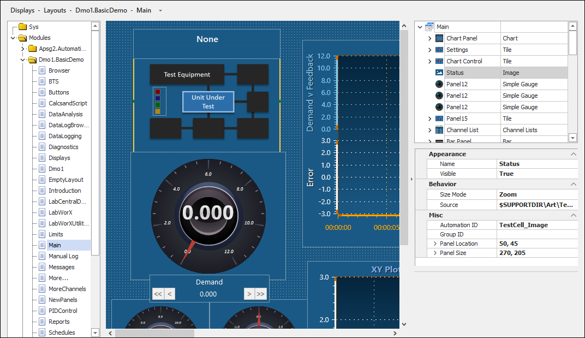
In the list of layouts, you can view a preview of each layout by hovering over the layout name. This list also allows you to add, rename, delete, or duplicate your layouts. Layouts are organized by module.
 |
NOTE: | The first time you use the Layouts editor, a placeholder image displays for the image of the layout. You must first make a change and save the solution for a preview of the layout to display. |
Preview Layout
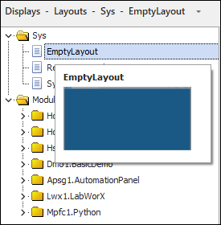
The following sections detail various ways you can interact with the editor's interface.
To make editing easier, you can expand the editing area by hovering over the line dividing the editor and the properties panel, selecting the section divider, and dragging it to the right to make the area larger. To collapse the properties panel completely, click the arrow icon in this section.
Expand/Collapse Properties Panel - Layout Editor
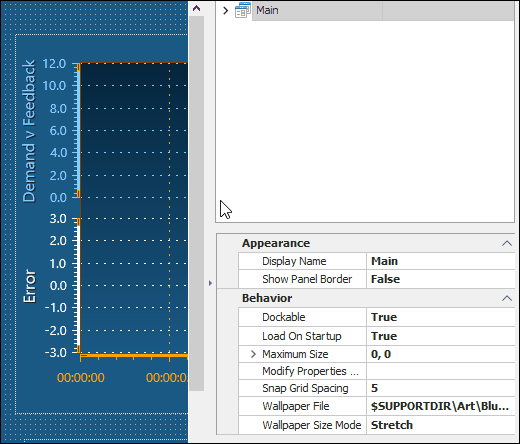
Use the property panel to browse and edit the available properties; thereby, affecting the appearance, behavior, and other miscellaneous functions of the panel.
Edit Panel Selection
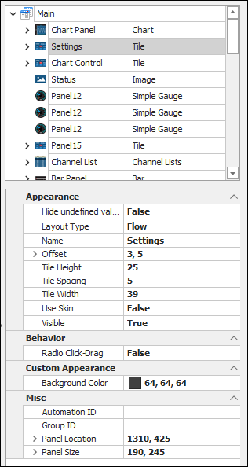
When you select a panel, a bold yellow line displays around the panel, and the panel's properties display in the property panel. When you select a sub-object, such as a channel tile, text tile, individual gauge, or individual bar, a thin yellow line displays around the sub-object, and its properties display in the property panel.
Panel Selection
You can select multiple panels by dragging the cursor to form a box around the panels you wish to select. Dragging the cursor from left to right will select panels that are fully enclosed by the box while dragging the cursor from right to left will select panels that are either partially or fully enclosed by the box. The property panel will only list the shared properties for panels selected in this manner. Any changes in the property panel will also apply to the whole group.
Dragging a Cursor from Left to Right
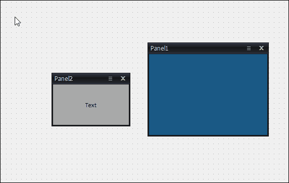
Dragging a Cursor from Right to Left
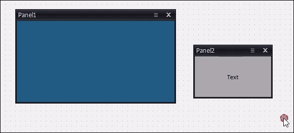
The following keyboard shortcuts are supported in the editor:
Shortcut Options and Descriptions
| Keyboard Shortcut | Description |
| CTRL + C | Copies the selected panel. This includes all its content, such as properties and current configuration. |
| CTRL + V | Pastes the copied panel. The panel is offset by 20 pixels when pasted this way. |
| CTRL + X | Cuts the selected panel. |
| CTRL + Z | Undo the previous action. |
| CTRL + Y | Redo the previous undone action. |
| ALT + Left-Click | Borderless panels can be selected anywhere within the panel and moved as needed. |
Layouts may differ in size based on their Maximum Size property. This can cause panels outside of the displayable area to not fully display in AutomationPanel. The area outside of the displayable area will render as a gray brick background, indicating that these panels will not fully display in AutomationPanel.
Viewing Displayable Area
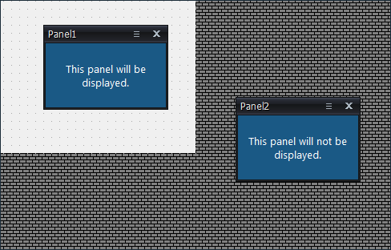
To add a new layout, do the following:

SolutionBuilder displays properties specific to the Layout and Layout Toolbar editors. You can access these properties in the property panel when you first load a layout/toolbar or by right-clicking the background and selecting the Properties... option.
The following table describes general properties:
SolutionBuilder Properties
| Option | Editor | Value | Description |
| Appearance | |||
| Display Name | - Layout | String | Name shown in the tab for the layout in AutomationPanel. It can be localized by using a string table macro from a language translation file. By default, this field is blank and uses the file name in the layout's tab. |
| Show Panel Border | - Layout - Layout Toolbar |
True/False | The setting that shows/hides panel borders in SolutionBuilder and AutomationPanel. This setting is only accessible in SolutionBuilder. If set to False, panels cannot be added to the layout in AutomationPanel; the New Panel... right-click option will be disabled. Any attempt to add a panel to a borderless layout in AutomationPanel will result in an error message. |
| Behavior | |||
| Dockable | - Layout | True/False | The setting that defines if the layout is dockable. When a layout is dockable, it can be attached to specific areas on the AutomationPanel interface. |
| Load On Startup | - Layout | True/False | The setting that determines if the layout can be loaded on startup. If set to true, you will be prompted to clear this setting when closing a layout in AutomationPanel; this prompt does not display if this setting is set to false. |
| Maximum Size | - Layout | x, y | The maximum size of the layout. Panels displayed outside of this area may not be fully displayed in AutomationPanel. For reference, the outside area is rendered as a gray brick background. For more information, refer to the Viewing the Displayable Area section. |
| Modify Properties Group | - Layout - Layout Toolbar |
String | The name of an iTest security group, which allows users of the group to modify panels. This setting is used when the "AP: Manage Panels" and "AP: Modify Panel Properties" security permissions are false. |
| Snap Grid Spacing | - Layout - Layout Toolbar |
Integer | The horizontal and vertical spacing of the grid to help align borderless panels. The grid is enabled when you right-click the background and select the Show Snap Grid option. |
| Wallpaper File | - Layout - Layout Toolbar |
File path | The path to the file used to display an image on the layout background. |
| Wallpaper Size Mode | - Layout - Layout Toolbar |
None Tile Center Stretch Zoom |
The wallpaper display style. |
Customize each panel's properties using the descriptions provided in the Panel Types documentation. The right-click options differ depending on the panel selected.
The following options are available when you right-click in the editor:
Right-Click Descriptions: List of Layouts
| Option | Editor | Description |
| Add | - Layout | Adds a new blank layout to the solution. The new layout displays at the end of the list. For more information, refer to the Adding a New Layout section. |
| Remove | - Layout | Removes a selected layout/toolbar. |
| Rename | - Layout | Enables editing of the layout/toolbar name. |
| Duplicate | - Layout | Duplicates a selected layout/toolbar. |
| Cut | - Layout | Cuts a selected layout/toolbar and removes it from the list. |
| Copy | - Layout | Copies a selected layout/toolbar. |
| Paste | - Layout | Pastes a copied or cut layout/toolbar. |
| Undo | - Layout | Undoes the last action. |
| Redo | - Layout | Redoes the last undone action. |
| Set as Default | - Layout | Sets the selected layout as the default layout. The default layout displays first in AutomationPanel. A checkmark will appear next to the menu option if this layout is the default layout. |
Right-Click Descriptions: Background
| Option | Editor | Description |
| New Panel... | - Layout - Layout Toolbar |
Adds a new panel to the layout/toolbar. |
| New Connector | - Layout - Layout Toolbar |
Adds a new connector object to the layout/toolbar. For more information, refer to the Configuring Connectors section. |
| Paste | - Layout - Layout Toolbar |
Pastes a copied or cut panel. |
| Show Snap Grid | - Layout - Layout Toolbar |
Enables a grid background for aligning your panels on a layout. |
| Snap to Grid | - Layout - Layout Toolbar |
Allows you to move panels along the grid by either clicking and dragging or using your keyboard's arrow keys. |
| Show Invisible Panels | - Layout - Layout Toolbar |
View any panels with the Visible=False setting. For more information, refer to the Viewing Invisible Panels section. |
| Properties... | - Layout - Layout Toolbar |
Opens the properties specific to the layout/toolbar. |
| Undo | - Layout - Layout Toolbar |
Undoes the previous action. |
| Redo | - Layout - Layout Toolbar |
Redoes the last undone action. |
Right-Click Descriptions: Property Panel
| Option | Editor | Description |
| Expand All | - Layout - Layout Toolbar |
Expands all available nodes in the layout/panel. |
| Collapse All | - Layout - Layout Toolbar |
Collapses all available nodes in the layout/panel. |
| Help... | - Layout - Layout Toolbar |
Opens the help documentation for the selected panel. For more information, refer to the Introduction to SolutionBuilder documentation. |
Depending on whether the panel or one of its sub-objects is selected, different options are available in the right-click menu.
|
NOTE: | Right-click menu options vary depending on panel and sub-object type. |
Panel Selection Right-Click Options
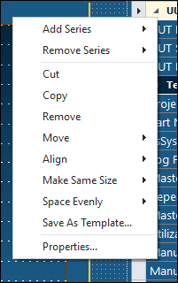
Sub-Object Right-Click Options
Right-Click Descriptions: Common Panel Menu Options
| Option | Editor | Description |
| Move | - Layout - Layout Toolbar |
Allows you to define whether a panel/connector will appear above or below other panels in the same grid. For more information, refer to the Move section. |
| Align | - Layout - Layout Toolbar |
Allows you to align two or more panels horizontally or vertically. For more information, refer to the Align section. |
| Make Same Size | - Layout - Layout Toolbar |
Allows you to make two or more panels the same size. For more information, refer to the Make Same Size section. |
| Space Evenly | - Layout - Layout Toolbar |
Allows you to equally space three or more panels. For more information, refer to the Space Evenly section. |
| Cut/Copy/Paste | - Layout - Layout Toolbar |
Allows you to cut, copy, or paste a selected panel. For more information, refer to the Cut/Copy/Paste section. |
To view panels that have the Visible=False setting, right-click within a layout and select Show Invisible Panels. This allows you to view any applicable panels without having to change the Visible property setting.
View Invisible Panels
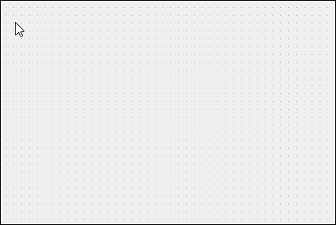
This right-click option allows you to define whether a panel will appear above or below other panels in the same grid.
To move a panel above or below other panels, do the following:
This right-click option allows you to align two or more panels horizontally or vertically.
To align your panels, do the following:
This right-click option allows you to make two or more panels the same size.
To make your panels the same size, do the following:
This right-click option allows you to equally space three or more panels. Panels can be evenly spaced right to left or up and down.
To evenly space three or more panels, do the following:
When using the Cut or Copy right-click options, the selected panel is copied to the clipboard and can be pasted using the Paste right-click option. When pasting a selected panel, the panel will be pasted at the cursor position in the editor.
Pasting Panels
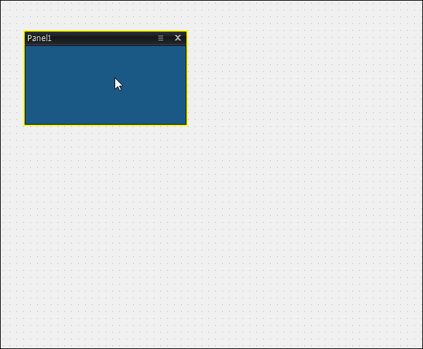
The Connector object allows you to connect panels in layouts, making it easier to create flowcharts that can be viewed in AutomationPanel. These objects are only editable in SolutionBuilder.
Example: Connecting Panels
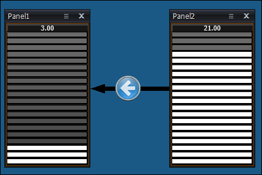
To add a new Connector object, right-click within the editor and select the New Connector option. The following connector types are available: Line, Corner, Vertical S-Curve, Horizontal S-Curve, and Image. These connector types determine the appearance and properties of the Connector object. Use the descriptions provided in the table below to configure the Connector object.
New Connector Object
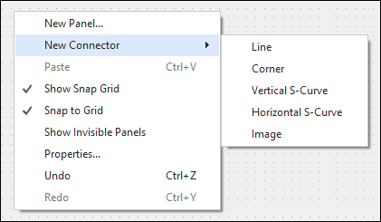
Connector Properties
| Property | Description | Supported Connector Types |
| APID | The ID used to automate modifications to connector properties at runtime using channels or mailslot messages. Properties that support automation will display the <ID>.<PropertyName> value at the bottom of the Property Manager dialog. | - All |
| BeginArrowSize | Determines the size (in pixels) of the beginning arrow. The size is determined by two numeric values separated by a comma. The first numeric value specifies the width, and the second numeric value specifies the height. A value of 0,0 will result in the arrow being hidden. |
- Line - Corner - Vertical S-Curve - Horizontal S-Curve |
| Color | The color used for the Connector object. | - Line - Corner - Vertical S-Curve - Horizontal S-Curve |
| EndArrowSize | Determines the size (in pixels) of the ending arrow. The size is determined by two numeric values separated by a comma. The first numeric value specifies the width, and the second numeric value specifies the height. A value of 0,0 will result in the arrow being hidden. |
- Line - Corner - Vertical S-Curve - Horizontal S-Curve |
| GroupID | Groups connectors together such that clicking on the visual representation of the panel in the Layout Editor selects all panels sharing the same Group ID. Clear this setting to remove the panel from the group. | - All |
| Radius | Determines the angle of the curve. A smaller value (e.g., 0) will result in the curve appearing more straight while a larger value (e.g., 50) will result in the curve appearing more rounded. | - Corner - Vertical S-Curve - Horizontal S-Curve |
| ImageFilePath | The file path to the image used for the Connector object. | - Image |
| Visible | Show or hide the entire connector. | - All |
| Width | Determines the width of the line for the Connector object. | - Line - Corner - Vertical S-Curve - Horizontal S-Curve |
The following right-click options are available for the Connector object:
Connector Right-Click Options
| Option | Description | Keyboard Shortcut |
| Cut | Removes the selected connector and copies it to the clipboard. | Ctrl + X |
| Copy | Copies the selected connector to the clipboard. | Ctrl + C |
| Remove | Removes the selected connector. | Del |
| Move | Allows you to move the selected connector above or below other connectors using the respective option. | - |